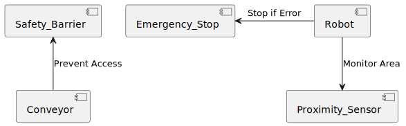

Information
Project Overview: This project focuses on developing an automated system for sorting scrap metal using vision technology and robotics. The system integrates a vision-based detection mechanism, a conveyor belt, and a robotic arm to classify and sort various types of metals for recycling purposes.
Key Deliverables:
- Conveyor System: To move materials true out the system.
- Vision System: Cameras for real-time object detection.
- Robotic Arm: A 2-axis arm that interacts with materials based on vision system data.
- Flipper: To puch material of conveyor system.
- Documentation: Choices and why these have been made.
Group Information
| Team Member | Roles | |
|---|---|---|
| Jesse de Klein | 516392@student.saxion.nl | General Member |
| Vincent Molenkamp | 519540@student.saxion.nl | General Member |
| Daan Scholten | 537519@student.saxion.nl | General Member |
| Milan Oude Nijeweme | 517922@student.saxion.nl | Group Manager |
| Oriol Valles Garcia | 571634@student.saxion.nl | General Member |
| Lars Schumacher | 505340@student.saxion.nl | General Member |
Project Discription
Project Purpose: The project aims to automate the process of metal sorting for recycling using a vision-based detection system integrated with a robotic arm for pick-and-place tasks.
Objectives:
- Automate the sorting process for different types of metals.
- Increase sorting accuracy to nearly 100%.
- Improve safety by minimizing human interaction and ensuring system safeguards are in place.
- Technologies:
- Vision System for object detection.
- AI for metal recognition.
- Conveyor belt for material transfer.
- Robotic arm for picking and placing materials into designated bins.
- Flipper to move materials of conveyor.
Project Planning

Automation System Blueprint
This process diagram illustrates the automation setup for detecting, identifying, and sorting various types of metal on a conveyor belt. The system comprises a camera with AI capabilities and a Cartesian Robot that work together to categorize and sort metal objects.
-
Detection and Identification: As metals move along the conveyor belt, a camera detects each object and, using AI, determines its type and location on the belt.
-
Sorting and Placement: If a metal type is successfully identified, the information is sent to the Cartesian Robot, which moves to the specified position, picks up the object, and places it in the appropriate bin. If the metal type is unknown or not recognized, the object remains on the conveyor and is ultimately directed to an "unknown" bin.
-
Continuous Operation: After each object is processed, the system resets to handle the next item on the conveyor, ensuring a continuous sorting workflow.
This diagram provides a high-level overview of the key components and steps in this automated sorting process.

Analyses & Desing
This component diagram shows the key elements of the Metal Detection and Sorting System and their interactions.
-
Metal Detection System: The Conveyor Belt moves metal objects to the Camera & AI for detection and classification.
-
Control System: The AI Processing Unit analyzes the metal type, and the Control Unit directs the Cartesian Robot to sort the object.
-
Sorting System: The Cartesian Robot places the metal in the correct bin or in the Unknown Bin if the type is unrecognized.
This diagram provides a structural overview of the system and how each component works together to automate the sorting process.

Procces, FlowControl & Diagrams
-
Detection with line scan camera: The line camera continuously scans the metals on the moving conveyor belt, capturing one line of an image at a time. All these line photo's whill be put together to create an image.
-
AI recognition: The AI analyzes these images to identify the type of metal for example copper or aluminum. The right type of metal whill be chosen by comparing the images to a data base with all the metals.
-
Location calculation and robot arm control: The system calculates the metal’s current position based on the time elapsed and speed of the conveyer belt. The robot arm uses this calculation to pick up the object at the correct moment. The robot does this by using 3 axis one that moves above the conveyer belt in the y direction, the other ones is for the z direction to pick the metal from the belt and the last one is to rotate the gripper.
-
Sorting: The robot arm moves each piece of metal to the appropriate location, such as a bin or container for that specific metal type.

Safety Considerations
-
Physical Safety for Operators:
- Enclosures & Barriers: Protect areas around the robot and conveyor.
- Emergency Stops: Accessible buttons for immediate shutdown.
-
System Safety Features:
- Collision Sensors: Detect and prevent robotic collisions.
- Overload Protection: Prevents handling weights above capacity.
-
Electrical Safety:
- Grounding & Insulation: Reduces risk of electric shock.
- Surge Protection: Safeguards against electrical fluctuations.
-
Monitoring & Alerts:
- Real-Time Monitoring: Detects abnormalities early.
- Automated Alerts: Notifies of temperature or sensor issues.
-
Maintenance & Training:
- Routine Checks: Ensure all components work safely.
- Operator Training: Covers operation and emergency protocols.
-
Environmental Control:
- Dust Control & Ventilation: Keeps sensors clear and stable.
- Temperature Regulation: Prevents overheating for reliable performance.
Risk analysis
-
Technical Risks:
- Risk: Component failures in PLC, sensors, or robot.
- Mitigation: Regular maintenance, real-time monitoring, and backup components.
-
Sorting Accuracy Risks:
- Risk: Inaccurate sorting due to similar metal properties.
- Mitigation: High-resolution sensors, AI-based algorithm improvements, and periodic calibration.
-
Integration Risks:
- Risk: Poor synchronization between conveyor and robot, leading to misplacements.
- Mitigation: Precise control algorithms, simulation testing, and real-time feedback.
-
Environmental Risks:
- Risk: Dust, dirt, and temperature changes affecting system performance.
- Mitigation: Enclosures, protective covers, and adaptive lighting.
-
Software Risks:
- Risk: Programming errors causing system malfunctions.
- Mitigation: Rigorous testing, version control, and fail-safe protocols.
Safety Intergration
Use Of Safety Standarts
System Diagrams
Blueprint Diagram
PlantUML rendering error: Failed to generate diagram (error sending request for url (http://localhost:8181/svg/TP8_JyCm4CNtIFaEf-nU61Woe8OWiRHIr4ZinZa5K_-JVKLKYE-EqpObJfFrxdVFxzvv4uXxEcgLPuwB0-yHYZSPf3NGdWAXBk0dpm24rSuQD0Grr-XvMYksilyWQNgehI5lLP5dltasqOprBpnP3y-eQ4qwfOfPioLq3ZtiB5b_zy3UlbkI0Yg_eFl8gcyPuCpCPL-z76J3akLXbLMppROUPowP06DF2r6KK7MVnq0mTX8-gfJGekbWnmczv0fUECLyPs5CO8VOZT33TBD_ff7YmBZfMAEuGAW4nOk6o0-cLttkaIj6KkFLiOvxfaFf3KguURoA9F0jsOkVo6WTFUNP9gvx_d9_): error trying to connect: tcp connect error: Kan geen verbinding maken omdat de doelcomputer de verbinding actief heeft geweigerd. (os error 10061))
System Comunication Diagram
PlantUML rendering error: Failed to generate diagram (error sending request for url (http://localhost:8181/svg/bP512i9034NtXTuX5_02BaGiYWiNeWUGE4rhe3CfcLZixPrnOorkIbR9v_t_8TjegFRqNLauyRq42WR7iIUDFJbJx6uLUbASwkTJDLqlSXUR7Ye90usYqzi-cRGKt7YxclG_RYelzcn9eH0pbUTV1rWfjmzRRNA3DHo8Ql1ef8mTM080GmsTE3IMK1RVp9WoPtIk0IcVbI2EqSW3Du3EU4YMTLdCUotbhzXGWdUeohIOphEbK7zUymO=): error trying to connect: tcp connect error: Kan geen verbinding maken omdat de doelcomputer de verbinding actief heeft geweigerd. (os error 10061))
Safety Diagrams
-
Conveyer belt: For the conveyer belt there needs to be a safety barrier to prevent people from putting objects in between moving parts of the belt. Otherwise people could hurt them self or damage the conveyer belt.
-
Emergency stop: For the robot there needs to be an emergency stop. This enables the user to stop the robot so they can work on the robot. And the emergency stop can stop the robot when een error occurs.
-
Proximity sensor: By using a proximity sensor the robot can be used much safer because if a person comes to close to the robot it can stop therefore the possibility of injury is much smaller. The robot also can not go out of his working area to ensure a safer work space.

Safety Mesures
TEST